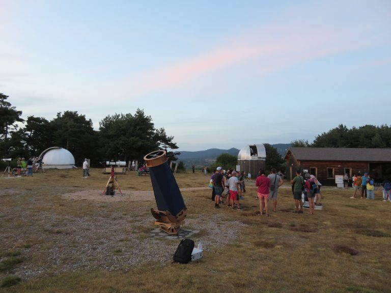
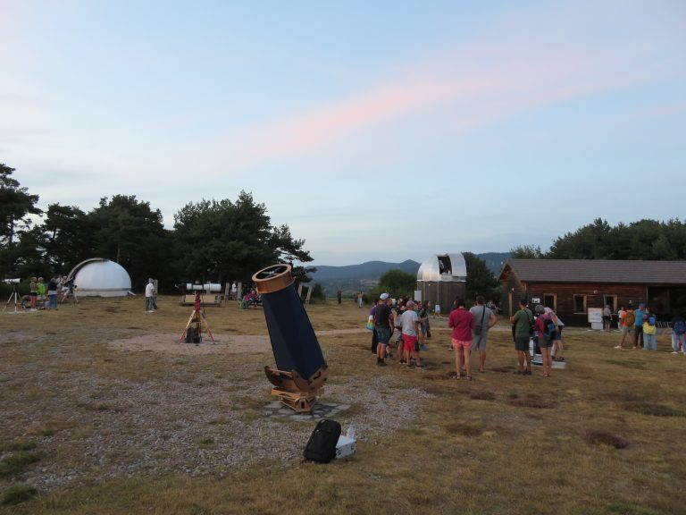

Présentation
Une des missions du club est de partager connaissance et passion de l’astronomie. Pour cela, le club propose une observation ouverte au public gratuitement une fois par mois (d’avril à juin et de septembre à octobre).
Les observations publiques peuvent être annulées le jour même si la météo ne permet pas d’observer (info disponible sur notre site à partir de 16h le jour de l’observation).
Période estivale (juillet & août)
Une fois par semaine, l’observatoire est ouvert au public.
- Tous publics (conseillé à partir de 7 ans)
- Inscriptions obligatoires
- Pour plus d’informations, consulter notre calendrier
Première partie : visite des coupoles et des installations, ateliers en plein-air (soleil, cadrans-solaires, géorama Soleil-Terre-Lune, pôle gravité, maquettes du système solaire et astronautique), suivis d’une conférence (2 au choix).
Deuxième partie : si le temps le permet, observation du ciel à l’œil nu guidée au laser suivie d’une observation dans les différents télescopes (dont celui de la coupole).
Tarifs : adulte 5€ — -18 ans gratuit — nuits des étoiles gratuit pour tous
Les animations et conférences sont maintenues même en cas de mauvais temps, seule l’observation peut être annulée.
Événements spéciaux
Nous organisons aussi des manifestations pour des événements importants tels que les éclipses, les transits de Mercure ou Vénus devant le Soleil.
Conseils pratiques
- Prévoir une tenue chaude (anorak, bonnet, etc.)
- Même en été, les nuits sont fraîches à 1000m d’altitude
- Utiliser une lumière rouge pour préserver la vision nocturne